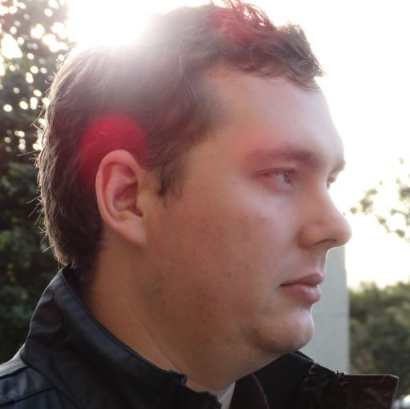
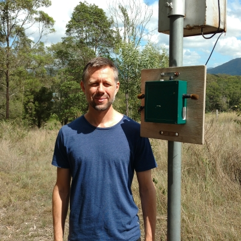
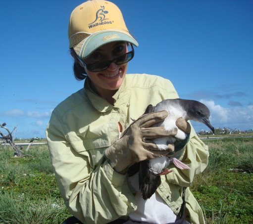
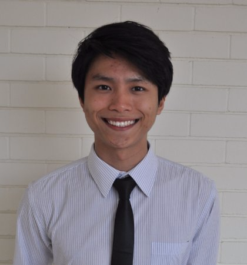
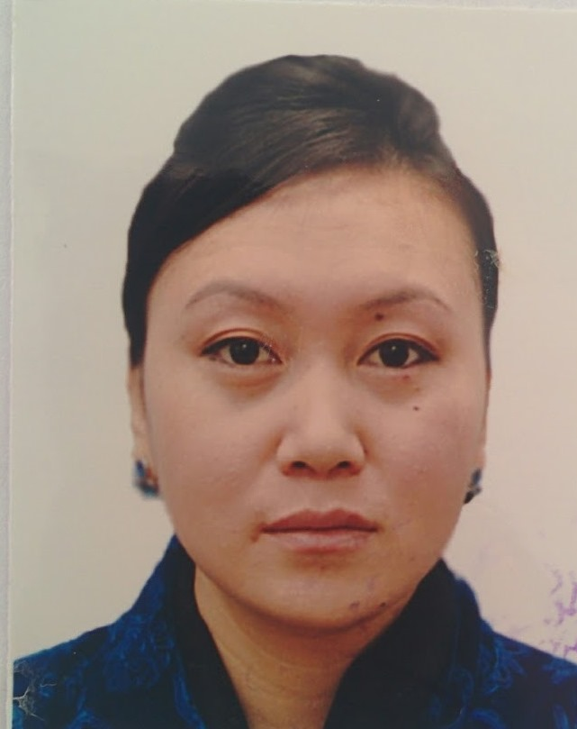
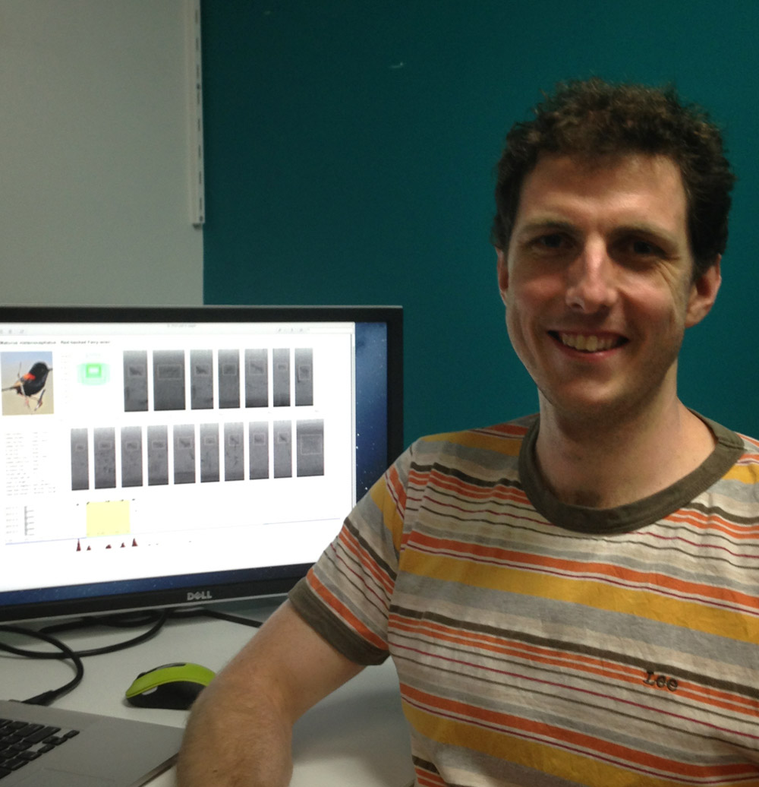
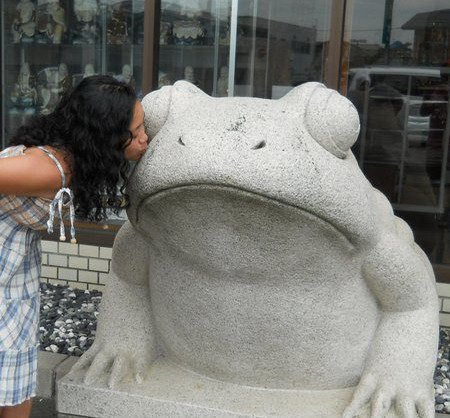

-

Prof. Paul Roe
Paul Roe is a full professor in the Science and Engineering Faculty at QUT, in Brisbane Australia, where he leads the Bioacoustic Research Lab. He has published over 80 papers and received over $4 M in competitive research funding. His research is focused on smart tools which enable new forms and scales of research, particularly in the area of distributed computing. -
Dr. Jinglan Zhang
Dr. Jinglan Zhang is a senior lecturer in Queensland University of Technology. She received her PhD in Information Technology in 2003 from Queensland University of Technology. Dr. Zhang has worked as an Engineer in Computer Aided Design and Computer Aided Engineering for 8 years and a researcher in Information Technology for more than 10 years. She has published more than 40 refereed research papers and jointly received about $1M in research funding. Her broad research area falls in Artificial Intelligence and Computer Software. In particular, her research interests include Visual and Acoustic Information (Graphics, Images, and Sound) Processing and Retrieval, Data Mining and Computer Human Interaction. The application areas include environmental monitoring and web intelligence. She has successfully supervised two PhD and one Master by Research students to completion. -

Dr. Michael Towsey
Dr. Michael Towsey has held research positions at QUT since 1997. He uses machine learning methods to solve biological problems. These have ranged from the sublime (analysis of bird song) to the ridiculous (analysis of milk yield in cow herds) with some bioinformatics in between! Michael is currently in the Bioacoustics Research Group within the School of Electrical Engineering and Computer Science at QUT. He works on the ‘big data’ problems associated with long duration recordings of the environment, in particular, building recognizers for species of interest, extracting acoustic indices to aid navigation and visualisation. -

Dr. Anthony Truskinger
Anthony Truskinger completed his PhD in May 2015. His thesis, titled Semi-Automated Annotation of Environmental Acoustic Recordings, is focused on assisting the citizen scientists that contribute useful information in online bioacoustic analysis environments.Anthony is currently a research assistant working for the bioacoustics research group. He supports other researchers within the group by managing data, running large scale analyses on large compute resources, and by developing professional bioacoustic analysis software for the web.
-

Dr. David Tucker
Dr. David Tucker is a landscape ecologist with a research and working background focused on terrestrial ecological surrogacy, biodiversity monitoring and conservation management. He is responsible for monitoring the flora and fauna, including the recording of bioacoustic data, at the Terrestrial Ecosystem Research Network Peri-urban SuperSite, located at QUT’s Samford Ecological Research Facility (SERF) on the outskirts of Brisbane. -

Jessie Cappadonna
Throughout her career, Jessie Cappadonna, has been passionate about avian ecology and public engagement. In recent years, this led her to contribute on a wide variety of projects with the U.S. Geological Survey (Hawai`i), the U.S. Fish and Wildlife Service (Hawaiʻi), Point Blue Conservation Science (California), and the Cornell Lab of Ornithology (New York). Upon return to Australia, Jessie worked with University of Queensland's Environmental Decisions Group. As a PhD student at QUT, Jessie is investigating how to engage citizen scientists with bioacoustic research. In addition to her research, Jessie is also heavily involved with the Australian Citizen Science Association and BirdLife Australia. If interested in learning more please feel free to contact Jess via:
Twitter | Facebook | Research Gate | LinkedIn -

Min Zhen Chai
Min Zhen has joined the QUT's Ecoacoustics Research Group as a PhD student since March 2017. His research interest will be revolving around machine learning, distributed computing and Internet of Things domain. -

Tshering Dema
Tshering Dema has joined the Bioacoustics group as a PhD student in August, 2015. She is interested in studying visualization tools that can meaningfully show the rich implicit patterns and information hidden in long duration acoustics. She is excited to carry out similar ecoacoustic research in Bhutan. -

Phil Eichinski
Combining automated and non-automated methods of acoustic analysis for bird species richness surveys. Phil's research will explore ways of using automated acoustic analysis to determine rich and diverse subsets of a long recording. This will speed up the process of a manual species richness survey conducted by a human, as they will need to listen to less audio to observe all the species present. -

Karlina Indraswari
Karlina is interested in how acoustics can be used to monitor change in ecological communities. Her PhD is focused on how the environment influences frog call partitioning under disturbed and undisturbed conditions. In the past she has worked with frog communities in Japan and forest conservation issues in tropical regions. -
Yvonne Phillips
Yvonne Phillips is a PhD student at QUT. She is interested in spatial and temporal heterogeneity of sound within ecosystems and at ecosystem boundaries. -

Dezmond Wells
Dezmond Wells is a Research Masters student at QUT. His thesis is entitled: How can the affects of habitat attenuation on acoustic sensors recording avian species be used to determine abundance in a two-hectare ecological sample. -
Liang Zhang
Liang Zhang is a PhD student in the Science and Engineering Faculty at QUT. His research interest is in acoustic regime in long duration audio recording.